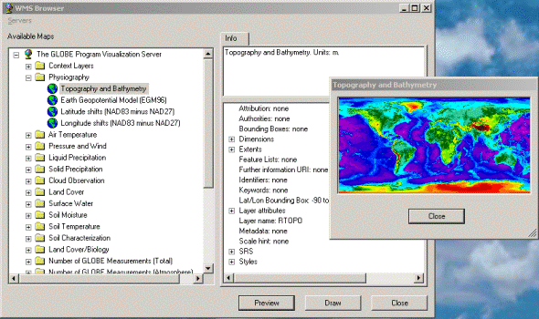
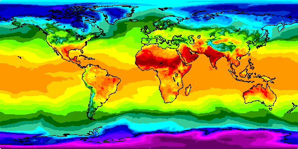
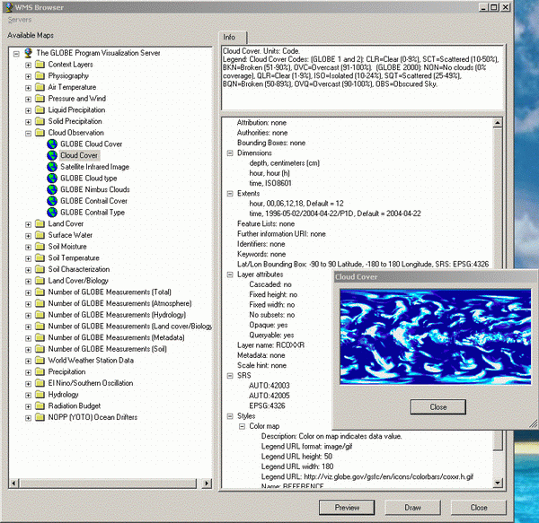

Abstract
This tutorial introduces the Web Mapping Service (WMS) protocol
standardized by the OpenGIS Consortium for retrieving geographic maps
over the internet. The tutorial provides C# examples of progressively
increasing complexity to illustrate use of the protocol and programmatic
access from Windows .Net applications. Several utility classes for
accessing WMS servers and information are provided and described.
Introduction
An amazing number of free, interesting, and just plain beautiful
geographic maps are available on the web, and they can be easily
retrieved programmatically using the Web Mapping Service protocol
developed by the OpenGIS consortium (http://www.opengis.org/
). For example, follow the link below to retrieve a world map of
today's highest temperatures. Come back here afterwards to learn how it
works.
Editor Note - Spaces inserted into URL to avoid horizontal scrolling
The map you saw in your browser should have looked something like
this, which shows the world's maximum temperatures on April 23, 2004:

The URI you just followed is an example of a Web Mapping Service (WMS) GetMap request.
Each element of the URI is a defined parameter of the WMS protocol: The
base path of the URI identifies the WMS server; the query sting
specifies the desired maps and how to represent them. There are
additional parameters possible, but the ones above are the required
ones.
This article gives an overview of WMS, and it presents C# code to
retrieve maps and perform other operations necessary when working with
WMS servers and information.
The Web Mapping Service Protocol
WMS is a web protocol created by the OpenGIS Consortium as a standard
way to request and deliver geographic maps and associated information
over the web. Data providers and application developers are increasingly
adopting WMS. The full WMS specification is available at www.opengis.org/specs/?page=specs.
The most commonly implemented version is version 1.1.1, but there are
still some servers stuck at version 1.0. The next version, 1.3, (version
number 1.2 was skipped) is in development as of April 2004. As
standards go, the WMS standard is not hard to read, and it's blessedly
short. Give it a look when you're done reading this article. It contains
information essential to using WMS, and it's free! A WMS discussion
list exists at mail.digitalearth.org/mailman/listinfo/wms-dev . There's a link to a WMS FAQ on that page, too.
A WMS request is an HTTP-GET message sent to a WMS server. The WMS specification defines three request types: GetCapabilities, GetMap, and GetFeatureInfo.
You'll find that you use the first two almost exclusively. These two
request types are the only ones you need to achieve all the
functionality described in this tutorial.
Determining the Available Maps
The maximum temperature is one of the many maps available from
institutions that receive raw data and process it into geographic
information displays. The link two sections above accesses the NASA
GLOBE Visualization server (see http://www.globe.gov/
), which provides comprehensive information on the world's environment
and is updated daily. This information comes from space-based and
land-based instruments, as well as teams of students around the world
who collect local data.
How do you determine where to find WMS servers? And how do you
learn what maps are available? The last question is the easiest to
answer: Every WMS server provides upon request an XML document, called
the server's WMS capabilities description, that describes all the maps
that server can generate, and all the details and available variations
you can request for those maps. The document also identifies the URIs
for programmatically accessing the maps. Typically, the capabilities
description is updated daily to reflect new data. To see the
Capabilities document for the GLOBE server as of April 23, 2004, open this file (GLOBECapabilities20040423.xml)
in a browser window, preferably a separate window from this one. You
can also follow the link below to get today's version of the document:
Editor Note - Spaces inserted into URL to avoid horizontal scrolling
But the content returned by the link above won't come back from the
server properly typed as XML, so the browser won't recognize it and
format it nicely. This typing issue is a problem with the WMS 1.1.1
specification. The specification ridiculously specifies a mime type
other than text/xml for the returned XML content, so unaware
applications receiving the content treat it as an unknown content type.
Your programs can work around this, but web browsers typically don't.
The problem is expected be corrected in the WMS 1.3 specification.
The first section of the capabilities description is called the
Service section. It gives information about the WMS server itself,
including the server's owner and their contact information, any access
constraints or fees, and attribution requirements.
The second section of the capabilities description is called the
Capability section. It identifies access URIs for the server's WMS
features such as GetMap requests. It gives the names and
descriptions of all the maps the server provides. The map names are each
unique relative to the server, and they are the tokens you use to
request a particular map. Other information about maps includes optional
textual titles and abstracts, the geographic regions over which a
particular map is defined, whether style information such as legends or
companion graphics -- logos, etc. -- exist and where to retrieve them
from, and lots of other map details and request options. Any optionally
implemented WMS capabilities are also indicated in the Capability
section. One such capability is the GetFeatureInfo service
that returns information about a particular location on a map. (See the
WMS specification for a full description and the details of using the GetFeatureInfo request.)
Available WMS Servers
Finding available WMS servers is currently a bit difficult. You
pretty much just need to know where they are, or be clever hunting for
them. There has been talk about creating an on-line registry of servers,
but this hasn't happened yet, and who knows whether it ever will. Here
are the URIs of three well-functioning servers that are available as
this article is being written and that support WMS version 1.1.1.
- http://viz.globe.gov/viz-bin/wmt.cgi
- http://wms.jpl.nasa.gov/gis-wms.cgi
- http://demo.cubewerx.com/demo/cubeserv/cubeserv.cgi
The offerings of these servers can be viewed using the WMS Browser example included in the download source of this article.
A web site with links to WMS servers is available at http://sunrise.gsfc.nasa.gov/cgi-bin/viewer.cgi.
Some of these servers implement WMS version 1.0, which the examples in
this article won't work with. For WMS products and some good demos,
visit http://www.cubewerx.com/main.
Maps vs. Layers
You won't find the term "map" in a WMS capabilities document or the
WMS specification. WMS refers to what most of us would call a map as a
"layer." A layer can be an individual map, or it can be a collection of
maps, or even a collection of collections of maps. It's really just the
name for a node in a map hierarchy. The partially expanded GLOBE
server's hierarchy looks like the list below, with collection layers
identified by solid bullets, and layers that are individual maps
identified by hollow bullets and given in italics:
- Context Layers
- Physiography
- Topography and Bathymetry
- Earth Geopotential Model
- Latitude Shifts
- Longitude Shifts
- Air Temperature
- Pressure and Wind
- Liquid Precipitation
- Solid Precipitation
- Cloud Observation
- Land Cover
- Albedo
- Composite Albedo
- Vegetation Index
- Surface Water
- Surface Moisture
- Surface Temperature
- Soil Characterization
- Land Cover/Biology
. . .
- World Weather Station Data
- Precipitation
- El Nino/Southern Oscillation
- Hydrology
- Radiation Budget
- NOPP (YOTO) Ocean Drifters
Each hollow-bullet layer above indicates a map. And while the
collection layers could contain additional collections of collection
layers, they don't on this particular server.
Typically, only layers at the leaves of a layer hierarchy can be
requested (to be returned as maps). Their parent layers serve mainly to
group them logically. However, a server may allow some of these grouping
layers to be requested in a single GetMap request, in
which case the server returns a single map that combines all layers
within that group. This will yield one map with probably a lot of
information on it, but the server is likely to allow this capability
only if the layers make sense when displayed as a unit. The key to
whether a layer is requestable is the layer name field in the
capabilities description. All layers have a name field, but only layers
you can actually request have a name specified in that field. The field
is typically empty for grouping layers. So the rule is, if the
capabilities description gives a non-empty name for a layer, you can
request that layer in a GetMap request, regardless of whether that layer has sub-layers or not. If a layer has no name, it can't be requested.
The GetMap Request
The GetMap request is the only way to request a layer.
The request is a simple http-get request that contains a base path
identifying the server and a query string identifying the desired map
and any optional parameters. The most essential part of the query string
is the layer name. Other parameters of the query string are the desired
graphics format (GIF, JPEG, PNG, etc.), the size in pixels of the map
image to return, any specific time or elevation for which to generate
the map, and the geographic coordinate system or projection to use when
creating the map. You can find the full list of required and optional
parameters in the WMS spec.
Here again is the GetMap URI from above:
Editor Note - Spaces inserted into URL to avoid horizontal scrolling
The URI components prior to the query string (everything before the
question mark) identifies the WMS server and the destination of the GetMap
request. This info is given in the server's capabilities description,
in its Capability section. The query string (everything after the
question mark) identifies the parameters describing the map we want, in
the form of attribute-value pairs separated by ampersands.
The above URI requests two layers: "COASTLINES" and "RATMAX." These
layer names were taken from the server's capabilities description. Since
we're requesting two layers, the WMS server will compose those layers
into a single map and return that map to us. This is an important point
to understand: GetMap always returns one map,
regardless of how many layers we ask for. The URI above asks for the
returned map to be in GIF format. The formats a server can generate are
given in its capabilities description, but most servers can create GIF
and JPEG maps. The request asks for a map image 600 pixels wide and 300
pixels high. The map should cover the full longitude and latitude of the
Earth, -180 degrees longitude and -90 degrees latitude to +180 degrees
longitude and +90 degrees latitude, with those values specified in the
EPSG:4326 spatial reference system (SRS), which is the common
latitude/longitude system familiar to all of us. (EPSG is the
organization that defines such things as Earth coordinate systems.) One
more piece of required information is the "STYLES" we'd like. In this
case we specify an empty value, "STYLES=,&", to get the default
style. I don't cover styles in this article, but you can look in the WMS
specification and the GLOBE server's capabilities description to get a
sense of what they are.
All the above information is the minimum required to request a map.
You'll notice that the URI also contains values for "SERVICE" and
"VERSION", as well as the request name, "REQUEST= GetMap". All these
parameters are required. The value for the VERSION parameter must be one
the server supports, which you can determine by using the sever
negotiation procedure described in the WMS specification. In practice
you can most likely get away with just asking for version 1.1.1 until
the 1.3 specification comes out. When that happens we'll all have to get
more professional about version negotiation.
Using WMS Programmatically
So far we've just been using in-line URIs to get maps and the
server's capabilities. But I'm hoping that you're noticing how easy it
would be to form and invoke those URIs from a program, one written in
just about any language. (Does FORTRAN know about the web yet?)
But how do you get the capabilities description programmatically? The
example below shows a simple way. It explicitly builds the GetCapabilities URI, using .Net's System.UriBuilder class, then uses .Net's System.Net.WebRequest and System.Net.WebResponse
classes to request and retrieve the XML capabilities description. In
this example the description is simply copied to a local text file with a
.xml file extension, then the program invokes Internet Explorer to
display it. The program is in the accompanying project code; give it a
try. You have to be connected to the internet for it to work
successfully, of course.
namespace Wms.Client
{
class GetCapabilitesExample
{
[System.STAThread]
static void Main(string[] args)
{
System.UriBuilder uri = new System.UriBuilder(
@"http://viz.globe.gov/viz-bin/wmt.cgi");
uri.Query = "SERVICE=WMS&REQUEST=GetCapabilities";
System.Net.WebRequest wr = System.Net.WebRequest.Create(uri.Uri);
System.Net.WebResponse response = wr.GetResponse();
System.IO.StreamReader sr = new System.IO.StreamReader(
response.GetResponseStream());
string fileName = System.IO.Path.GetTempPath() +
@"capabilities.xml";
System.IO.StreamWriter sw = System.IO.File.CreateText(fileName);
sw.Write(sr.ReadToEnd());
sr.Close();
sw.Close();
invokeIe(fileName);
}
static private void invokeIe(string uri)
{
System.Diagnostics.Process ie = new System.Diagnostics.Process();
ie.StartInfo.FileName = "iexplore.exe";
ie.StartInfo.Arguments = uri;
ie.Start();
}
}
}
Retrieving WMS Maps
Now let's get a map. The example below creates and sends a WMS GetMap request and displays the returned results in Internet Explorer. The GetMap request is formed using a Wms.Client.WmsRequestBuilder
class that I created to make it easy to build WMS requests. This class
is in the accompanying download project. It provides set and get
accessors for the WMS request parameters, and includes a get accessor to
retrieve the correctly formed WMS URI.
Although WMS is an XML-based specification, the returned value from a GetMap
request is a graphics image, not XML. (The exception is if the request
asks for some XML-based graphics format, such as GML or SVG). You
encounter XML only in capabilities descriptions, in exception messages
returned from GetMap and other WMS requests, and in the information returned by the GetFeatureInfo request.
To handle WMS capabilities descriptions easily, at least in C#, I've created a Capabilities class in a namespace Wms.Client. An instance of this class parses the XML capabilities description (using .Net's System.Xml.XPath classes), and provides granular, type-safe accessors to its contents. For example, to read the URI for sending GetMap requests, a program accesses the property Wms.Client.Capabilities.GetMapUri, as in the example below. The Capabilities class is included in the accompanying source code.
The following example pulls the GetMap request
destination from the server's capabilities description, but merely uses
two hard-coded layer names that I know work. (We'll get more useful than
this later in the article.) It also uses another class, Wms.Client.Server, that I created to encapsulate a WMS server and its capabilities description.
namespace Wms.Client
{
class GetMapExample
{
[System.STAThread]
static void Main(string[] args)
{
System.UriBuilder serverUri =
new System.UriBuilder(
@"http://viz.globe.gov/viz-bin/wmt.cgi");
Wms.Client.CapabilitiesRequestBuilder capsRequest =
new Wms.Client.CapabilitiesRequestBuilder(serverUri.Uri);
System.Net.WebRequest wr =
System.Net.WebRequest.Create(capsRequest.Uri);
System.Net.WebResponse response = wr.GetResponse();
string fileName = System.IO.Path.GetTempPath() +
@"capabilities.xml";
copyStreamToFile(response.GetResponseStream(), fileName);
Wms.Client.Server server = new Wms.Client.Server(fileName);
Wms.Client.Capabilities caps = server.Capabilities;
Wms.Client.MapRequestBuilder mapRequest =
new Wms.Client.MapRequestBuilder(new System.Uri(
caps.GetMapRequestUri));
mapRequest.Layers = "COASTLINES,RATMIN";
mapRequest.Styles = ","; mapRequest.Format = "image/gif";
mapRequest.Srs = "EPSG:4326";
mapRequest.BoundingBox = "-180.0,-90.0,180.0,90.0";
mapRequest.Height = 300;
mapRequest.Width = 600;
mapRequest.Transparent = false;
System.Net.WebRequest mwr =
System.Net.WebRequest.Create(mapRequest.Uri);
System.Net.WebResponse mresponse = mwr.GetResponse();
string mapFileName = System.IO.Path.GetTempPath() +
@"wmsmap.gif";
copyStreamToFile(mresponse.GetResponseStream(), mapFileName);
invokeIe(mapFileName);
}
private static void copyStreamToFile(
System.IO.Stream stream, string destination)
{
using (System.IO.BufferedStream bs =
new System.IO.BufferedStream(stream))
{
using (System.IO.FileStream os =
System.IO.File.OpenWrite(destination))
{
byte[] buffer = new byte[2 * 4096];
int nBytes;
while ((nBytes = bs.Read(buffer, 0, buffer.Length)) > 0)
{
os.Write(buffer, 0, nBytes);
}
}
}
}
static private void invokeIe(string uri)
{
System.Diagnostics.Process ie = new System.Diagnostics.Process();
ie.StartInfo.FileName = "iexplore.exe";
ie.StartInfo.Arguments = uri;
ie.Start();
}
}
}
WMS Retrieval Caching
All the examples in this article save the retrieved information,
either a capabilities description or a map, to a local file, and then
operate on that local file rather than the stream returned from the WMS
server. This may seem like an unnecessary step, and indeed it is if you
don't want to cache the retrieved information. But every useful WMS
program I've written wants to keep the retrieved information around so
that it doesn't have to request it again if the user wants to use it
again. This is especially true of maps, which can take considerable time
to retrieve and which can cause the WMS server a lot of work to create.
Because I suspect that you'll want to cache things, I make a point in
the examples of retrieving to a file. Feel free to do otherwise in your
programs.
As I describe below in the section Description of the Accompanying Code, the Wms.Client
project in the accompanying download code contains a class that manages
a persistent file cache for WMS maps. The cache is user-specific and
persists across invocations of WMS programs that use it. Again, the need
for this came from my experience that most programs using WMS will want
to cache maps to avoid subsequent retrieval overhead.
Caching WMS capabilities descriptions is a different story, however. I
usually do not cache those because they often change on the server from
day to day. For instance, if I cached the capabilities description from
the GLOBE server today, then when I used that cached description
tomorrow it would not include the many maps that server generated
overnight. For that reason I almost always retrieve a new version of the
capabilities description when a program starts. The exception is when I
want the program to run even when the computer is not connected to the
internet. In that case I will cache the capabilities description each
time I retrieve it, and then use the cached version if the computer is
not connected to the internet when the program is subsequently run. Of
course, the program still won't be able to access the WMS server and its
maps if it's not connected to the internet, so only maps that were also
cached will be available.
Making Asynchronous WMS Requests
Normally we don't want to retrieve maps -- or even capabilities
descriptions -- synchronously like we did in the above examples. The
example below demonstrates using two classes I created for asynchronous
retrieval, Wms.Client.CapabilitiesRetriever and Wms.Client.MapRetriever. We pass to an instance of these classes a Wms.Client.WmsRequestBuilder
object and an event handler (a C# delegate) to be called when the
request completes. We can also specify to the retriever a progress event
handler that is called at intervals to indicate retrieval progress.
It's in this event handler that the below example incorporates progress
feedback to the user. In the example, the progress event handler simply
adds characters to a text string in a status bar at the bottom of the
map window.
This is the first example in this article that uses Windows Forms to display the map. The main form contains a Picture Box (System.Windows.Forms.PictureBox) to which we pass an Image (System.Drawing.Image) object that was created from the map file that was saved locally by the map retriever.
The example is also the first to do some rudimentary error handling.
WMS servers return WMS exceptions if something goes wrong in the WMS
components of the server. These exceptions are returned as XML
documents, but with a content type of application/vnd.ogc.se_xml.
(This is another instance of WMS' misuse of content type, and it's
expected to be fixed in the next version of the specification.) The
example below merely checks for this content type (and a variant that is
erroneously returned by some WMS servers) and does not parse the
exception document. Not that parsing the exception document is
difficult, it's just more than I want to capture in this example. The
download code accompanying this article contains a class that converts
WMS XML exceptions to .Net exceptions. See the Description of the Accompanying Code section below for a description of it.
Notice that the Retriever objects use Request objects to figure out
what to retrieve. The retrievers will not start -- an exception will be
thrown -- if its Request field is not set prior to calling the
Retriever's Start method. For more information about this see the Description of the Accompanying Code section below, and the Retriever code itself.
using System;
using System.Drawing;
using System.Collections;
using System.ComponentModel;
using System.Windows.Forms;
using System.Data;
namespace Wms.Client
{
public class GetMapAsynchExample : System.Windows.Forms.Form
{
private System.Windows.Forms.PictureBox pictureBox;
private System.Windows.Forms.StatusBar statusBar;
private System.ComponentModel.Container components = null;
public GetMapAsynchExample()
{
InitializeComponent();
}
protected override void Dispose( bool disposing )
{
if( disposing )
{
if (components != null)
{
components.Dispose();
}
}
base.Dispose( disposing );
}
#region Windows Form Designer generated code
private void InitializeComponent()
{
this.pictureBox = new System.Windows.Forms.PictureBox();
this.statusBar = new System.Windows.Forms.StatusBar();
this.SuspendLayout();
this.pictureBox.BorderStyle =
System.Windows.Forms.BorderStyle.Fixed3D;
this.pictureBox.Location = new System.Drawing.Point(8, 8);
this.pictureBox.Name = "pictureBox";
this.pictureBox.Size = new System.Drawing.Size(600, 300);
this.pictureBox.TabIndex = 0;
this.pictureBox.TabStop = false;
this.statusBar.Location = new System.Drawing.Point(0, 319);
this.statusBar.Name = "statusBar";
this.statusBar.Size = new System.Drawing.Size(616, 22);
this.statusBar.TabIndex = 1;
this.AutoScaleBaseSize = new System.Drawing.Size(5, 13);
this.ClientSize = new System.Drawing.Size(616, 341);
this.Controls.Add(this.statusBar);
this.Controls.Add(this.pictureBox);
this.Name = "GetMapAsynchExample";
this.Text = "Get Map Asynch Example";
this.ResumeLayout(false);
}
#endregion
static void Main()
{
GetMapAsynchExample form = new GetMapAsynchExample();
form.statusBar.Text = "Retrieving Capabilities ";
Wms.Client.CapabilitiesRetriever capsRetriever =
new Wms.Client.CapabilitiesRetriever(form);
capsRetriever.ProgressInterval = new System.TimeSpan(0,0,0,0,500);
capsRetriever.Done +=
new Wms.Client.RetrieverDoneEventHandler(form.capsRetrieveDone);
capsRetriever.Progress +=
new Wms.Client.RetrieverProgressEventHandler(
form.showCapsProgress);
capsRetriever.Request =
new Wms.Client.CapabilitiesRequestBuilder(
new System.Uri(@"http://viz.globe.gov/viz-bin/wmt.cgi"));
capsRetriever.Destination = System.IO.Path.GetTempFileName();
capsRetriever.Start();
Application.Run(form);
}
private void showCapsProgress(System.Object sender,
Wms.Client.RetrieverProgressArgs ea)
{
this.statusBar.Text += "+";
}
private void capsRetrieveDone(object sender,
Wms.Client.RetrieverDoneArgs ea)
{
if (ea.Reason ==
Wms.Client.RetrieverDoneArgs.CompletionReason.Completed)
{
if (ea.ContentType.Equals("application/vnd.ogc.wms_xml")
|| ea.ContentType.Equals("text/xml"))
{
initiateMapRequest(
ea.DestinationObject as Wms.Client.Server);
}
else if (ea.ContentType.Equals("application/vnd.ogc.se_xml")
|| ea.ContentType.Equals("application/vnd.ogc.se+xml"))
{
string msg = "The WMS server returned an exception."
+ System.Environment.NewLine;
System.Windows.Forms.MessageBox.Show(msg,
"WMS Server Exception",
System.Windows.Forms.MessageBoxButtons.OK,
System.Windows.Forms.MessageBoxIcon.Error);
}
else
{
string msg =
"The WMS server returned an incorrect format of "
+ ea.ContentType + "." + System.Environment.NewLine
+ "This is not a valid format."
+ System.Environment.NewLine
+ "Would you like to see if Internet Explorer"
+ " can show you what was returned?";
System.Windows.Forms.DialogResult yesNo =
System.Windows.Forms.MessageBox.Show(msg,
"Invalid WMS Format",
System.Windows.Forms.MessageBoxButtons.YesNo,
System.Windows.Forms.MessageBoxIcon.Error);
if (yesNo == System.Windows.Forms.DialogResult.Yes)
{
invokeIe(ea.Retriever.Request.ToString());
}
}
}
else if (ea.Reason ==
Wms.Client.RetrieverDoneArgs.CompletionReason.TimedOut)
{
string msg = "Contacting WMS server timed out."
+ System.Environment.NewLine;
System.Windows.Forms.MessageBox.Show(msg,
"WMS Server Contact Timed Out",
System.Windows.Forms.MessageBoxButtons.OK,
System.Windows.Forms.MessageBoxIcon.Error);
}
else {
string msg = "Error contacting WMS server: " + ea.Message
+ System.Environment.NewLine;
System.Windows.Forms.MessageBox.Show(msg,
"Unable to contact WMS server",
System.Windows.Forms.MessageBoxButtons.OK,
System.Windows.Forms.MessageBoxIcon.Error);
}
}
private void initiateMapRequest(Wms.Client.Server server)
{
this.statusBar.Text = "Retrieving Map ";
Wms.Client.MapRequestBuilder mapRequest =
new Wms.Client.MapRequestBuilder(
new System.Uri(
server.Capabilities.GetCapabilitiesRequestUri));
mapRequest.Layers = "COASTLINES,RATMIN";
mapRequest.Styles = ","; mapRequest.Format = "image/gif";
mapRequest.Srs = "EPSG:4326";
mapRequest.BoundingBox = "-180.0,-90.0,180.0,90.0";
mapRequest.Height = 300;
mapRequest.Width = 600;
mapRequest.Transparent = false;
Wms.Client.MapRetriever mapRetriever =
new Wms.Client.MapRetriever(this);
mapRetriever.ProgressInterval =
new System.TimeSpan(0,0,0,0,500);
mapRetriever.Done += new Wms.Client.RetrieverDoneEventHandler(
this.mapRetrieveDone);
mapRetriever.Progress +=
new Wms.Client.RetrieverProgressEventHandler(
this.showMapProgress);
mapRetriever.Request = mapRequest;
mapRetriever.Destination = System.IO.Path.GetTempFileName();
mapRetriever.Start();
}
private void showMapProgress(System.Object sender,
Wms.Client.RetrieverProgressArgs ea)
{
this.statusBar.Text += "+";
}
private void mapRetrieveDone(object sender,
Wms.Client.RetrieverDoneArgs ea)
{
Wms.Client.MapRequestBuilder mapRequest =
ea.Retriever.Request as Wms.Client.MapRequestBuilder;
if (ea.Reason ==
Wms.Client.RetrieverDoneArgs.CompletionReason.Completed)
{
if (ea.ContentType.Equals("application/vnd.ogc.se_xml")
|| ea.ContentType.Equals("application/vnd.ogc.se+xml")
|| ea.ContentType.Equals("text/xml"))
{
string msg = "Retrieval of map returned an error:" +
System.Environment.NewLine;
System.Windows.Forms.MessageBox.Show(msg,
"WMS Server Exception",
System.Windows.Forms.MessageBoxButtons.OK,
System.Windows.Forms.MessageBoxIcon.Error);
}
else
{
System.Drawing.Image image =
System.Drawing.Image.FromFile(ea.DestinationFile);
this.pictureBox.Image = image;
this.statusBar.Text = System.String.Empty;
}
}
else if (ea.Reason ==
Wms.Client.RetrieverDoneArgs.CompletionReason.Error)
{
System.Windows.Forms.MessageBox.Show(
"Error retrieving map: "
+ ea.Message,
"Retrieval error",
System.Windows.Forms.MessageBoxButtons.OK,
System.Windows.Forms.MessageBoxIcon.Error);
}
else if (ea.Reason == RetrieverDoneArgs.CompletionReason.TimedOut)
{
System.Windows.Forms.MessageBox.Show(
"Retrieval of map timed out.",
"Retrieval error",
System.Windows.Forms.MessageBoxButtons.OK,
System.Windows.Forms.MessageBoxIcon.Error);
}
}
static private void invokeIe(string uri)
{
System.Diagnostics.Process ie = new System.Diagnostics.Process();
ie.StartInfo.FileName = "iexplore.exe";
ie.StartInfo.Arguments = uri;
ie.Start();
}
}
}
A WMS Browser and Dialog
Now let's get closer to something more generally useful. The figure
below shows a dialog box that lists, on the left, a WMS servers and its
layers. (The code for this example is included in the accompanying
download project.) The layers are presented in the dialog in the
hierarchy defined by the server. On the right is the WMS information
about the server or about the layer, depending on which item in the left
panel is selected. This information is that within the WMS capabilities
description retrieved from the server. In the figure, the "Cloud Cover"
layer of the GLOBE Program Visualization Server is selected. It's a
named layer -- "RCOXXR" -- so we can request a map for it. A small
version of that map is shown in the preview pane that partially covers
the right panel. Notice in the right panel that there is a lot of map
information that I haven't even mentioned.

The version of this program in the download code contains three WMS
servers in the left panel: The GLOBE Visualization Server, the Web Map
Server at JPL, and the Cascading Map Server at CubeWerx, Inc. These
servers, especially the GLOBE and CubeWerx servers, hold a wonderful
collection of maps. You can use the sample program to take a look at
them.
Map Extents
Take a look at the "Extents" item in the right panel of the figure
above. That item is about a third of the way down from the top. The
extents field of a WMS layer gives the date, time, or elevation values
for which the layer can be presented -- for which a map can be
generated. One of the extents displayed above is:
time, 1996-05-02/2004-04-22/P1D, Default = 2004-04-22
This indicates that cloud cover maps can be created for any day
between and including May 2, 1996 and April 22, 2004 (today, as I'm
writing this). The "P1D" term denotes that the capture period of the
data is every one day. We can specify the day we want a map for by
including an EXTENTS parameter in a GetMap request for this layer. Isn't
that cool! More cool is that we can create several GetMap requests for a
sequence of days, retrieve those maps, and use them to display an
animation, in this case changes in cloud cover. The accompanying project
contains a simple program that does just that. It display the world's
cloud cover for the first ten days of May 2004. The example is listed
and described below, in the section entitled Animating Maps.
If I issue a GetMap request for this layer and do not specify a date,
I'll get back the map for the default time, which is April 22, 2004 as
shown in the above excerpt. On this WMS server, the default changes
every day because the server is updated with new data every night. In
fact, many of the layers on this server are updated nightly.
The name of the field "Extents" is a bit misleading. On first sight
my guess would be that it has something to do with the geographic map
extents available. But no, that information is available in the
"Bounding Boxes" field.
Animating Maps
We're all familiar with the animated weather maps seen on television
newscasts. These are easy to create using WMS: Simply retrieve a
collection of maps and post them to the display successively. The
following example does this, and as you can see it's only a modified
version of the previous example that asynchronously retrieves one map.
This new example initiates retrieval of ten maps, each representing a
day's cloud cover composed with a map of the world's coastlines. Once
all the maps are retrieved, the example displays them successively to
show cloud movement. In order to reduce clutter in the example, I've
removed all the error handling code as well as the code Visual Studio
generated. The error handling code would be identical to that in the
previous example, and you can see the full program in the download code.
Things to note in this example are that a new Wms.Client.MapRetriever
object is created for each map to retrieve. Also, there is no progress
handler for these retrievers; progress is monitored and displayed via a
Windows Forms Timer object. The timer-tick event handler of this timer
determines when all the maps have been retrieved, and then continually
posts them successively to the display until the program exits.
You can produce these animations for any WMS layers that specify in
their server's capabilities description that they have extents.
Typically the extents are time, such as the dates available, and you ask
for each map within the specified extents by specifying the desired
time in the Time parameter of the GetMap request. In the example below,
notice that mapRequest.Time is set with a string indicating
the date of the map we want. Ten successive days are specified, from
May 1, 2004 to May 10, 2004. Many maps also have elevation extents. You
request any of the available elevations by using the Elevation parameter
of the GetMap request. The Time and Elevation parameters are
independent, so if the layer has both types of extents defined, you can
ask for a map for a particular time and a particular elevation. Other
extent types are possible, but the WMS specification doesn't
specifically call them out, and the method of requesting them is more
complex. See the WMS specification if you're interested in this.
using System;
using System.Drawing;
using System.Collections;
using System.ComponentModel;
using System.Windows.Forms;
using System.Data;
namespace Wms.Client
{
public class MapAnimationExample : System.Windows.Forms.Form
{
private System.Windows.Forms.PictureBox pictureBox;
private System.Windows.Forms.StatusBar statusBar;
private System.ComponentModel.IContainer components;
private System.Windows.Forms.Timer timer;
private System.Windows.Forms.ProgressBar progressBar;
private Wms.Client.MapRequestBuilder [] mapRequests;
private System.Drawing.Image [] mapImages;
public MapAnimationExample()
{
InitializeComponent();
this.mapRequests = new Wms.Client.MapRequestBuilder[10];
this.mapImages = new System.Drawing.Image[10];
this.progressBar.Minimum = 0;
this.progressBar.Maximum = this.mapImages.Length;
}
#region Windows Form Designer generated code
static void Main()
{
MapAnimationExample form = new MapAnimationExample();
form.statusBar.Text = "Retrieving Capabilities ";
Wms.Client.CapabilitiesRetriever capsRetriever =
new Wms.Client.CapabilitiesRetriever(form);
capsRetriever.ProgressInterval =
new System.TimeSpan(0,0,0,0,500);
capsRetriever.Done +=
new Wms.Client.RetrieverDoneEventHandler(
form.capsRetrieveDone);
capsRetriever.Progress +=
new Wms.Client.RetrieverProgressEventHandler(
form.showCapsProgress);
capsRetriever.Request =
new Wms.Client.CapabilitiesRequestBuilder(
new System.Uri(@"http://viz.globe.gov/viz-bin/wmt.cgi"));
capsRetriever.Destination = System.IO.Path.GetTempFileName();
capsRetriever.Start();
Application.Run(form);
}
private void showCapsProgress(System.Object sender,
Wms.Client.RetrieverProgressArgs ea)
{
this.statusBar.Text += "+";
}
private void capsRetrieveDone(object sender,
Wms.Client.RetrieverDoneArgs ea)
{
if (ea.Reason ==
Wms.Client.RetrieverDoneArgs.CompletionReason.Completed)
{
if (ea.ContentType.Equals("application/vnd.ogc.wms_xml")
|| ea.ContentType.Equals("text/xml"))
{
initiateMapRequest(ea.DestinationObject
as Wms.Client.Server);
}
}
}
private void initiateMapRequest(Wms.Client.Server server)
{
this.statusBar.Text = "Retrieving Maps ";
for (int i = 0; i < this.mapRequests.Length; i++)
{
this.mapRequests[i] = new Wms.Client.MapRequestBuilder(
new System.Uri(
server.Capabilities.GetCapabilitiesRequestUri));
this.mapRequests[i].Layers = "COASTLINES,RCOXXR";
this.mapRequests[i].Styles = ",";
this.mapRequests[i].Format = "image/gif";
this.mapRequests[i].Srs = "EPSG:4326";
this.mapRequests[i].BoundingBox = "-180.0,-90.0,180.0,90.0";
this.mapRequests[i].Height = 300;
this.mapRequests[i].Width = 600;
this.mapRequests[i].Transparent = false;
this.mapRequests[i].Time =
System.String.Format("2004-05-{0:D2}", i+1);
Wms.Client.MapRetriever mapRetriever =
new Wms.Client.MapRetriever(this);
mapRetriever.ProgressInterval =
new System.TimeSpan(0,0,0,0,500);
mapRetriever.Done +=
new Wms.Client.RetrieverDoneEventHandler(
this.mapRetrieveDone);
mapRetriever.Request = this.mapRequests[i];
mapRetriever.Destination = System.IO.Path.GetTempFileName();
mapRetriever.TimeoutInterval = System.TimeSpan.FromSeconds(180);
mapRetriever.Start();
this.statusBar.Text = "Retrieving Maps";
this.progressBar.Visible = true;
this.timer.Start();
}
}
private void mapRetrieveDone(object sender,
Wms.Client.RetrieverDoneArgs ea)
{
Wms.Client.MapRequestBuilder mapRequest =
ea.Retriever.Request as Wms.Client.MapRequestBuilder;
if (ea.Reason ==
Wms.Client.RetrieverDoneArgs.CompletionReason.Completed)
{
System.Drawing.Image image =
System.Drawing.Image.FromFile(ea.DestinationFile);
for (int i = 0; i < this.mapRequests.Length; i++)
{
if (this.mapRequests[i] == mapRequest)
{
this.mapImages[i] = image;
}
}
}
}
private void timer_Tick(object sender, System.EventArgs e)
{
int count = 0;
foreach (System.Drawing.Image image in this.mapImages)
{
if (image != null)
++count;
}
if (count < this.mapImages.Length)
{
this.progressBar.Value = count;
}
if (count == this.mapImages.Length)
{
this.statusBar.Text = "Displaying sequence";
if (this.pictureBox.Image == null)
{
this.pictureBox.Image = this.mapImages[0];
}
else
{
for (int i = 0; i < this.mapImages.Length; i++)
{
if (this.pictureBox.Image == this.mapImages[i])
{
this.pictureBox.Image =
this.mapImages[(i+1) % this.mapImages.Length];
this.pictureBox.Update();
this.progressBar.Value = i+1;
break;
}
}
}
}
}
}
}
Description of the Accompanying Code
The code accompanying this article consists of one Microsoft
Development Environment 2003 solution containing all the above examples
and a class library named Wms.Client. Everything is written
in C# and makes heavy use of Microsoft .Net version 1.1. The examples
are described above, and each is in its own project in the accompanying
solution. The Wms.Client classes are described briefly in the following sections.
Wms.Client Classes
The Wms.Client class library, included in the
accompanying MSDE 2003 solution, contains several classes that I found
useful for working with WMS servers and information. These classes
aren't rigorously designed or implemented, so feel free to grab the
source and clean them up as necessary for your needs. In the following
sections I briefly describe the Wms.Client classes and their purpose.
Wms.Client.Capabilities
This class provides a wrapper over the XML server capabilities
description. The class provides accessors for the capabilities fields.
Internally, the class uses XPath to parse, search and find the WMS
capabilities information. Use this class rather than the raw XML to
determine WMS server capabilities.
Wms.Client.Layer
This class represents a single layer in a WMS capabilities
description. Layers have much information associated with them. This
information is described via XML in the WMS capabilities description of
the server providing the layer. The Layer class provides
easy access to that information. Internally the class uses XPath to
parse and find requested information. A layer object is returned from
the Layer accessor of the Wms.Client.Capabilities class, and from the Layers accessor of another Layer object. Layers cannot be created independently of a Wms.Client.Capabilities object.
Wms.Client.Server
This is a simple class that represents a WMS server. It holds only
the server's capabilities document, but also contains a useful function
for generating Map requests pre-loaded with the server's GetMap
URI. One could argue that this class is not really needed; and I've had
that argument with myself several times. But it's proved handy to have
the class around, and it seems more obvious to pass a "server" around
than a capabilities reference, which is about all one really needs to
represent a WMS server.
Wms.Client.RequestBuilder
This is really two classes: CapabilitiesRequestBuilder and MapRequestBuilder.
These share a common base class representing a WMS request. The main
utility of these classes is to handle the formatting of the HTTP-GET URI
for a WMS request. Request parameters are specified by the application
via "set" accessors and stored within the request object. When the full
request URI is needed, the class forms it as a string containing the
request destination concatenated with the WMS query string for the
particular request.
Wms.Client.Retriever
Probably the most useful class in the bunch. It performs asynchronous
retrieval of WMS capabilities descriptions and maps. The application
passes to an instance of this class the WMS request to be executed,
specifies an event handler to be called when the request completes, and
then invokes the retriever's Start method, which will run
the retrieval on a separate thread. The application can then do work on
its own thread, typically the UI thread, and specify a progress callback
for the retriever to invoke periodically to indicate the progress of
the retrieval.
One subtle aspect of this class is that GetCapabilities
requests are deemed complete only after the retrieved capabilities
description is parsed on the retriever's worker thread (or an error
occurs). This is by design because the XML capabilities description
returned by the WMS server typically contains a DTD reference that must
be resolved by the XML parser. The parser issues an HTTP request for
that reference. Rather than have this implicit HTTP request issued
within the client/UI thread, the retriever forces it to be issued in the
retriever's worker thread so that the client/UI thread isn't blocked
waiting for that request to complete.
Wms.Client.ExtensionMap
This class maps the content type field returned by HTTP requests to
the appropriate file suffix for the content. I admit that this is a
hack, but I'm too lazy right now to continue searching through Windows
documentation to determine the API for extracting this information from
the Registry. If you know the magic call, please send me email.
Wms.Client.DownloadCache
A class for caching downloaded WMS content on the local computer.
This class implements a persistent file cache in the user's TEMP
directory. It eliminates the need to continually retrieve the same maps
and capabilities descriptions from a WMS server; this is especially
useful for map files, which can be large. The cache creates two files in
the user's TEMP directory: one is the file with the content to cache;
the other is a text file containing the full WMS URI used to retrieve
that file. Prior to sending a WMS server a request, an application first
asks the cache if the full WMS request URI it's going to send is a key
in the cache. If it is, then the application can simply grab the file
from the cache rather than issuing the WMS request to get it.
The cache contents are persisted in the user's TEMP directory. To
prime the cache at application run-time with previously cached files,
the application calls the cache's LoadPersisted function,
which fills the run-time cache with any cached files currently in the
TEMP directory. More description of this class and its use is included
in the section WMS Retrieval Caching above. Also see the WMS Browser example to understand how it's used.
Wms.Client.PreviewDialog
This is simply a Windows form implementing a display surface to show maps retrieved as previews by the WmsDialog class.
Wms.Client.ServerAddDialog
A class used by the WmsDialog class to allow the dialog
user to add a new WMS server to the list of servers displayed by the
dialog. This class hasn't been tested much.
Wms.Client.ServerDescriptor and WmsServerDescriptors.xml
The ServerDescriptor class wraps the internally defined
and used server-descriptor XML document, which specifies the default WMS
servers to be displayed by the WmsDialog class. The schema
is defined in WmsServerDescriptors.xsd, and the default servers are
listed according to that schema in the file
DefaultServerDescriptors.xml.
Wms.Client.WmsDialog
Modeled after the Windows file dialog, this class implements a dialog
box component for displaying available WMS servers and the maps they
can return. See the program WMSBrowser for an example of its use. The
dialog uses all the classes contained in Wms.Client. It retrieves WMS
capabilities descriptions and maps asynchronously, and it allows the
user to "preview" maps by showing them in a little pop-up form.
Applications can use WmsDialog either by invoking it via its Show or ShowDialog methods, or by deriving a new class from it, as the WMSBrowser application does.
Wms.Client.WmsException
This class wraps WMS exceptions that may be returned by a WMS server.
These exceptions come from the server as XML documents. The WmsException class parses those documents, using XPath, and places the exception information in an exception class derived from System.ApplicationException.
WMSBrowser
This class is not in the Wms.Client library, but it is included in
the download code. It implements a WMS browser application. Since it
derives its main form from Wms.Client.WmsDialog, it doesn't
need a lot of additional code. It implements only event handlers for
drawing and previewing maps, and for closing itself.
Conclusion
That's the nutshell overview of WMS and how to use it
programmatically. There's a good deal more to WMS than I've covered
here. I encourage you to read the WMS specification to learn the details
of tapping WMS capabilities. You'll also find there good, simple
descriptions of additional features and related specifications.
History
- May 24, 2004: Initial version.


 25 messages have been posted for this article
Visit
25 messages have been posted for this article
Visit